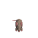
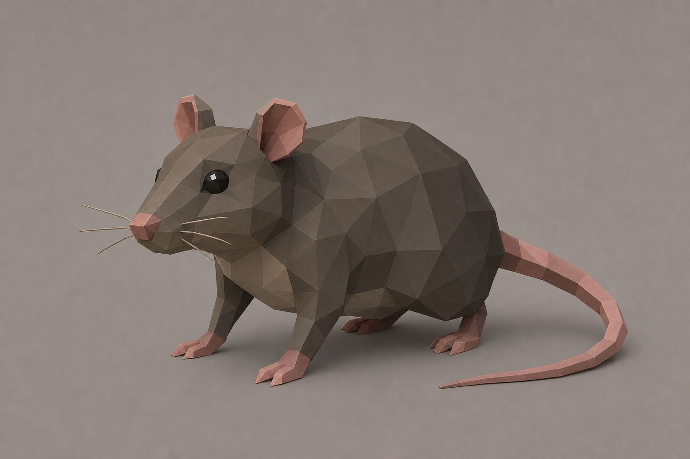
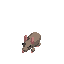
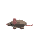
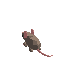
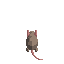
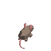
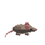
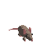
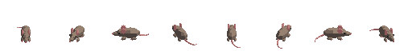

S 00

하나의 저폴리 3D 메시를 고정 직교 카메라와 고정 조명 아래 회전해 출력했습니다. 각 방향을 따로 생성한 AI 이미지가 아닙니다.

built-in imagegen으로 만든 실루엣·비율·팔레트 참고용 이미지입니다. 실제 방향 프레임의 형태나 픽셀을 생성하는 데 사용하지 않았습니다.
선별 반영: 큰 몸통, 긴 주둥이, 둥근 귀, 탁한 회갈색과 분홍색. 미반영: 사실적인 발가락·수염·고밀도 면 분할.
순서: S, SW, W, NW, N, NE, E, SE. 흰 십자선은 모든 셀에 동일한 루트 피벗 (32, 48)을 표시합니다.









| 원본 | source/rat-trial-v1.obj — 528 vertices, 924 triangles |
|---|---|
| 렌더 명령 | python source/render_rat_8dir.py |
| 카메라·조명 | 고정 직교 카메라, 고정 단일 키 라이트, 안티앨리어싱 없음 |
| 팔레트 | 투명 제외 7색, 큰 면 단위 양자화 |
| 현재 판정 | 파이프라인·방향 비교용 시험 에셋. 최종 아트와 Unity 적용값은 미확정. |